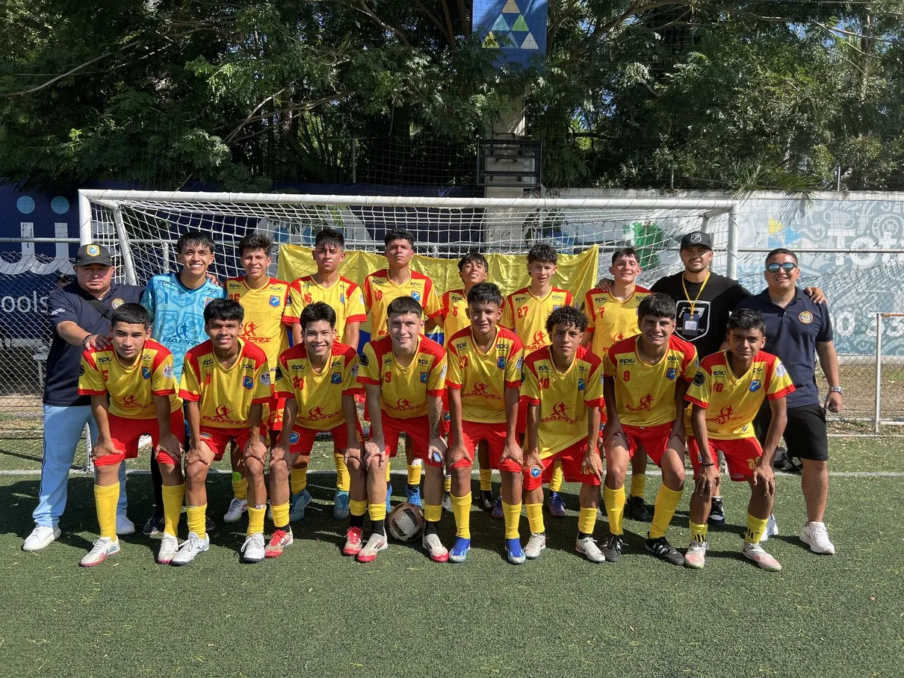

Apadrina un talento
Acompaña el proceso de un joven durante un año.
- Entrenamiento y uniforme
- Transporte y alimentación en jornadas
- Apoyo para viajar a competir
- Reporte del avance de tu ahijado

Con tu apoyo un niño entrena gratis, una niña recibe sus útiles, un joven de la Amazonía viaja a competir por Colombia. Y tu empresa genera impacto medible con beneficio tributario.
Mantenemos gratuito el acceso para los jóvenes priorizados. Esto es lo que financian las donaciones y los patrocinios.
Entrenadores, escenarios, balones y uniformes para procesos permanentes y gratuitos.
Kits escolares, refuerzo académico y módulos de habilidades para la vida.
Transporte, inscripciones, tiquetes y estadía para competir en Colombia y el exterior.
Nuevos procesos en Chocó, respuesta humanitaria y proyectos ambientales.
Acompaña el proceso de un joven durante un año.
Aportes únicos o mensuales de personas naturales o jurídicas.
Útiles escolares, implementos deportivos, uniformes, mercados o tiquetes aéreos.
Suma tu tiempo y tu conocimiento: entrenadores, profesores, psicólogos, fotógrafos o voluntarios de jornada.
La Fundación Sevenfold Colombia pertenece al Régimen Tributario Especial como entidad sin ánimo de lucro (ESAL). Por eso, las donaciones que recibimos pueden dar derecho a un descuento de hasta el 25 % del valor donado en el impuesto sobre la renta, según el artículo 257 del Estatuto Tributario. Entregamos el certificado de donación correspondiente.
El beneficio está sujeto a los requisitos y límites de la normativa vigente. Consulta el caso de tu empresa con tu contador o asesor tributario.Somos una plataforma para que las empresas generen impacto social medible, optimicen su carga tributaria de forma legal y fortalezcan su posicionamiento con una causa alineada con criterios ESG.
Diseñamos contigo programas de impacto a la medida, eventos corporativos de fútbol 7, activaciones de marca en torneos nacionales e internacionales y formación para entrenadores y colegios.
En noviembre de 2026 Seven Colombia viaja a Brasil con dos delegaciones. Tu marca puede ser socio oficial en todos los medios en los que el equipo participe.
 19–22 Nov · Porto Alegre
19–22 Nov · Porto AlegreSeven Bogotá representa al país con sus equipos mayores, Sub-13 y Sub-15. Una delegación de 30 jóvenes (15 por categoría), con cuerpo técnico y personal de apoyo especializado.
 23–25 Nov · Porto Alegre
23–25 Nov · Porto AlegreLa Selección Colombia de Fútbol 7, en sus ramas Única masculina y femenina. 30 integrantes (15 por selección), con cuerpo técnico y personal médico-deportivo.
También puedes apoyar aportes parciales: tiquetes, uniformes, inscripciones o el cupo de un jugador.
Cuéntanos si eres persona o empresa y qué tipo de apoyo te interesa.
Destino del aporte, alcance, contraprestaciones de marca y cronograma.
Por transferencia o en especie. Recibes el certificado de donación.
Fotos, cifras e informe de gestión con lo que se logró gracias a ti.
¿Tienes otra pregunta? Escríbenos a fundacionsevenfold@gmail.com.
Sí. La Fundación Sevenfold Colombia (FUNSEVEN) fue constituida el 11 de julio de 2025 en Bogotá, con NIT 901.965.467-5, y pertenece al Régimen Tributario Especial.
Sí. Toda donación recibe su certificado para efectos tributarios ante la DIAN.
No. El acceso es gratuito para los niños, niñas y jóvenes de las poblaciones priorizadas. Por eso tu apoyo es tan importante.
Sí. Puedes orientarlo a un territorio, a una delegación internacional, a kits escolares o a apadrinar a un joven. Te lo confirmamos en la propuesta.
Publicamos un informe anual de gestión y resultados, y a los aliados les enviamos reportes con registro fotográfico de cada actividad financiada.
Sí. Escríbenos y te indicamos el mecanismo más conveniente según tu país.

Respondemos con una propuesta clara y a la medida.